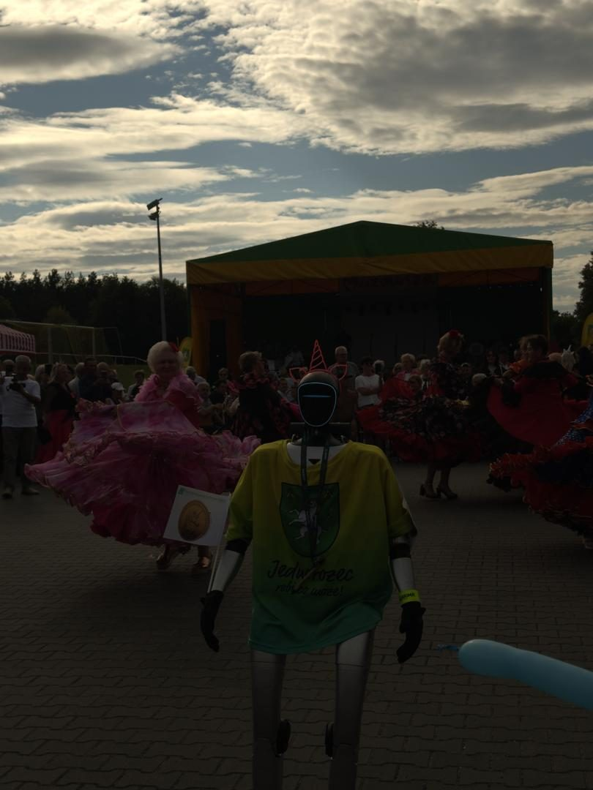

- Startseite
- Eventratgeber
- Stadtfest organisieren
Feste · Stadtfest · Planung
Stadtfest und Straßenfest organisieren: Attraktionen, Planung, Auflagen
Ein Stadtfest bringt eine ganze Stadt auf die Straße — und bedeutet für die Organisatoren Monate an Arbeit mit Behörden, Vereinen, Händlern und Künstlern. Hier lesen Sie, welche Attraktionen ziehen, welche Genehmigungen Sie brauchen, wie Sie das Fest finanzieren und in welcher Reihenfolge Sie planen.

Konzept: Was für ein Fest soll es werden?
- Anlass und Motto: Stadtjubiläum, Sommerfest, Weinfest, Kulturfest, Stadtteilfest.
- Zielgruppe: Familien, Jugendliche, Seniorinnen und Senioren, Touristen — meist alle zugleich.
- Größe: eine Straße, ein Platz oder die ganze Innenstadt?
- Dauer: ein Nachmittag, ein Tag oder ein ganzes Wochenende.
- Partner: Vereine, Gastronomie, Händler, Stadtmarketing, Sponsoren.
Attraktionen, die ziehen
- Hauptbühne mit Live-Musik. Lokale Bands am Nachmittag, ein Headliner am Abend.
- Walking Acts und Stelzenläufer. Bringen Leben in die Wege zwischen den Ständen.
- Kinderkarussell und Hüpfburg. Für Familien unverzichtbar — Mietpreise im Ratgeber Attraktionen mieten.
- Bullriding und Menschenkicker. Mitmachen, Zuschauen, Lachen.
- Mitmachstationen der Vereine. Feuerwehr, Sportvereine, Musikschule — jede Station ein Programmpunkt.
- Food Trucks und regionale Gastronomie. Kosten unter Food Truck mieten.
- Kunsthandwerker- oder Flohmarkt. Verlängert die Verweildauer.
- Kinderschminken und Ballonkünstler. Kleine Attraktionen mit großer Wirkung.
- Abendhöhepunkt. Feuershow, Lichtshow oder Drohnenshow — mehr unter Feuershow buchen.
- Humanoider Roboter. Begrüßt Besucher, läuft bei der Parade mit, tanzt auf der Bühne — mehr dazu weiter unten.
Genehmigungen und Auflagen
| Thema | Was meist nötig ist |
|---|---|
| Nutzung von Straßen und Plätzen | Sondernutzungserlaubnis der Stadt |
| Straßensperrung | verkehrsrechtliche Anordnung, Beschilderung, Umleitung |
| Ausschank von Alkohol | Gestattung nach dem Gaststättenrecht des Landes |
| Musik | Anmeldung der Veranstaltung bei der GEMA |
| Lärm | Ausnahmen von der Nachtruhe nur mit Genehmigung |
| Feuer und Pyrotechnik | Erlaubnis und Anzeige durch Fachleute |
| Sicherheit | je nach Größe Sicherheitskonzept, Sanitäts- und Ordnungsdienst |
| Haftung | Veranstalterhaftpflichtversicherung |
Die Anforderungen unterscheiden sich nach Bundesland und Kommune. Sprechen Sie das Ordnungsamt früh an — oft gibt es eine zentrale Ansprechperson für Veranstaltungen.
Sicherheit, Toiletten, Müll
- Rettungswege freihalten und markieren,
- Sanitätsdienst und Erste-Hilfe-Stationen,
- Ordnungsdienst an Eingängen und Bühne,
- ausreichend Toiletten, auch barrierefreie,
- Müllkonzept mit Mehrweg, Pfand und Reinigung nach dem Fest,
- Plan für Unwetter: wer entscheidet, wie wird informiert, wohin geht das Publikum?
Finanzierung
- Standgebühren von Händlern und Gastronomie,
- Sponsoring lokaler Unternehmen — mit sichtbaren Gegenleistungen wie Bühnenbanner oder einer benannten Attraktion,
- Zuschüsse der Stadt oder des Stadtmarketings,
- eigener Getränkeverkauf durch Vereine,
- Festbeitrag, etwa über ein Festabzeichen.
Zeitplan
| Wann | Was |
|---|---|
| 9–12 Monate vorher | Konzept, Termin, Organisationsteam, erste Gespräche mit der Stadt |
| 6–8 Monate vorher | Genehmigungen beantragen, Bühne, Technik und Headliner buchen |
| 4–6 Monate vorher | Sponsoren, Stände, Attraktionen, Sicherheitskonzept |
| 2–3 Monate vorher | Programm veröffentlichen, Werbung, Helferplanung |
| 2 Wochen vorher | Lageplan, Ablaufplan, Briefing aller Beteiligten |
| Danach | Abbau, Reinigung, Abrechnung, Dank an Helfer und Sponsoren |
Straßenfest und Vereinsfest
Kleinere Feste funktionieren mit einfachen Mitteln: ein gemeinsames Buffet, Biertischgarnituren, ein Flohmarkt, Kinderspiele wie Sackhüpfen, Kreidemalen und Dosenwerfen, Musik von Nachbarn oder Vereinsmitgliedern, ein Quiz über das Viertel. Auch für ein kleines Fest auf öffentlichem Grund brauchen Sie meist eine Erlaubnis der Stadt — fragen Sie rechtzeitig nach.
Ein Roboter auf dem Stadtfest
Ein humanoider Roboter ist auf Stadtfesten ein Magnet für alle Generationen. Er begrüßt Besucher, läuft bei der Parade mit, tanzt auf der Bühne, gibt Kindern High Fives und posiert mit Familien für Fotos — im Branding der Stadt oder eines Sponsors. Ein Operator steuert ihn und achtet auf Abstand und Sicherheit; der Roboter arbeitet auf befestigten Flächen und Bühnen.


Ein Veranstaltungstag kostet ab 2.500 €, ab zwei Tagen gibt es 15 % Rabatt auf jeden Tag — ideal für Feste über ein ganzes Wochenende. Mehr dazu: Roboter für Stadtfeste und Festivals.
Häufige Fragen
Mit einem Organisationsteam, einem klaren Konzept und früher Abstimmung mit der Stadt: Gelände und Termin festlegen, Genehmigungen beantragen, Sicherheitskonzept erstellen, Bühne, Stände und Attraktionen planen, Sponsoren gewinnen, Werbung machen und am Festtag eine zentrale Leitung mit klaren Zuständigkeiten haben.
Meist eine Sondernutzungserlaubnis für die Straße und gegebenenfalls eine verkehrsrechtliche Anordnung für Sperrungen, eine Gestattung für den Ausschank, bei Musik die Anmeldung bei der GEMA und je nach Größe ein Sicherheitskonzept. Welche Unterlagen genau nötig sind, sagt Ihnen das Ordnungsamt.
Bühne mit Live-Musik, Walking Acts und Stelzenläufer, Kinderkarussell und Hüpfburg, Bullriding, Mitmachstationen der Vereine, Food Trucks, Kunsthandwerkermarkt, Feuershow oder Drohnenshow am Abend und ein humanoider Roboter, der die Besucher begrüßt.
Über Standgebühren von Händlern und Gastronomie, Sponsoring lokaler Unternehmen, Zuschüsse der Stadt oder des Stadtmarketings, Einnahmen aus dem Getränkeverkauf und gegebenenfalls einen Festbeitrag. Sponsoren schätzen sichtbare Gegenleistungen wie Bühnenbanner oder eine benannte Attraktion.
Sechs bis zwölf Monate. Genehmigungen, Sicherheitskonzept und die Buchung von Bühne, Künstlern und Fahrgeschäften brauchen Zeit, und beliebte Acts sind für Sommerwochenenden früh vergeben.
Bei größeren Veranstaltungen verlangen die Behörden in der Regel ein Sicherheitskonzept mit Rettungswegen, Sanitätsdienst, Ordnungsdienst und Kommunikationsplan. Ab welcher Größe es Pflicht ist, regeln Länder und Kommunen unterschiedlich — stimmen Sie es früh mit dem Ordnungsamt ab.
Gemeinsames Buffet, bei dem jeder etwas mitbringt, Flohmarkt, Kinderspiele wie Sackhüpfen und Kreidemalen, Live-Musik von Nachbarn, ein Tauschtisch und ein Quiz über das Viertel. Für das Fest auf der Straße brauchen Sie trotzdem meist eine Erlaubnis der Stadt.